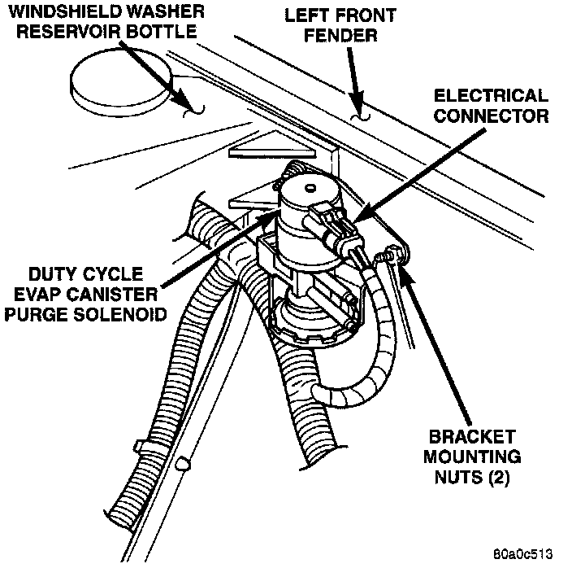

Canister Purge Solenoid: Service and Repair
EVAPORATIVE CANISTER PURGE SOLENOIDFig. 17 Canister Purge Solenoid - Typical:

The duty cycle evaporative (EVAP) canister purge solenoid is located in the left/front corner of the engine compartment on all engine/emission packages (Fig. 17).
REMOVAL
1. Disconnect the electrical connector at the solenoid.
2. Disconnect the vacuum lines at the solenoid.
3. Remove the two bracket mounting nuts and remove solenoid.
INSTALLATION
1. Position the solenoid to vehicle.
2. Install and tighten the two bracket mounting nuts to 5 Nm (45 in. lbs.) torque.
3. Connect the vacuum lines to the solenoid. Be sure the vacuum lines are firmly connected and not leaking or damaged. If leaking, a Diagnostic Trouble Code (DTC) may be set with certain emission packages.
4. Connect the electrical connector to the solenoid.